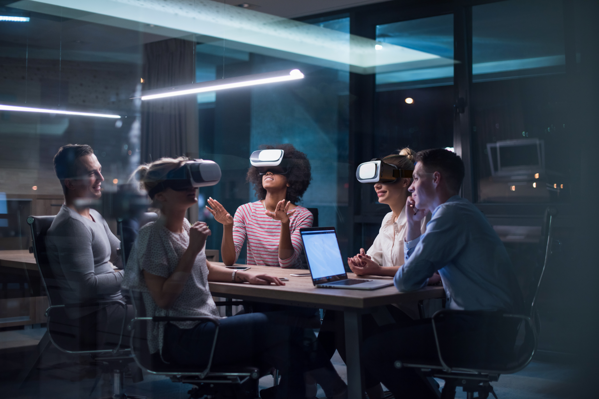

Mitme inimese VR
Tegemist on VR tüübiga, kus saavad mitu inimest korraga sama virtuaalreaalsusega liituda. See sobib näiteks koosolekuteks ja mitut inimest eeldavateks mängudeks.
Kasulikkus
Koostööl põhinev VR (Collaborative VR) võimaldab reaalajas suhtlust virtuaalruumis ilma füüsiliselt kokku saamiseta. Üldiselt saab Collaborative VR platformidel
iga inimene valida endale karakteri välimuse ning see peaks simuleerima reaalses maailmas kokku saamist.
Collaborative VR võib vähendada füüsilise kokku saamisega seotud kulutusi, sest virtuaalne koosolek võib anda samaväärseid tulemusi.
Kasutusvõimalused
Hariduses:
Õpilased saavad olenemata füüsilisest kaugusest teha koostööd ja õpetajad saavad neid aktiivselt juhendada. See kõik toimuks virtuaalses klassiruumis, seega väheneksid õppekulud õpilaste jaoks.
Koosolekud:
Töötajatega, klientidega või partneritega kohtumine läbi virtuaalse keskkonna võib olla väga interaktiivne. Ühine virtuaalne ruum võimaldab teha aktiivset koostööd,
seejuures on võimalik välisest ning digitaalsest maailmast sisu üle viia ühisesse virtuaalsesse maailma. Näiteks on võimalik virtuaalsetesse koosolekutesse kaasata
füüsilisi objekte ning prototüüpe, tabeleid, PDFe, 360-kraadiseid pilte ja palju muud. See võimaldab kõikidel osalistel saada suurepärane ülevaade koosolekul toimuvast.
Ühises virtuaalruumis on võimalik pidada põhjalikke arutelusid, viia läbi ajurünnakuid, jagada ideid, teha märkmeid, joonistada. Kokkuvõtteks oleks võimalik virtuaalselt
luua isegi parem koosolekukeskkond kui seda pakub füüsiline kokkusaamine.
Elukutseline väljaõpe:
Ohtlikutes valdkondades nagu keemia ja inseneeria, on võimalik erinevaid ohuolukordi mängida virtuaalselt läbi.
3D toote disaini esitlus:
Klientidele oma 3D disaini müües on palju lihtsam mudelit esileda läbi virtuaalreaalsuse. Potentsiaalsetel kleintidel on võimalik detailsemalt disaniga tutvuda.
Videomängud:
Võimalik on mängida VR mitmikmänge koos sõprade ja perega. Ühine mänguruum lisab kindlasti juurde mängupõnevust.
Tulevik
Arvatavasti tulevikus näeb üha laialdasemat Collaborative VR kasutamist. See saab olema osa inimeste elustiilist. Kindlasti muutub virtuaalmaailmas suhtlemine veel realistlikumaks ja tekib juurde uusi väljendusviise ja suhtlmine muutub naturaalsemaks.
Allikad: SimLab Soft LinkedIn